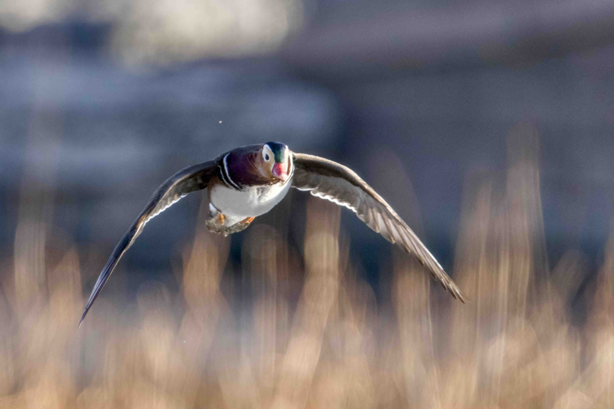

Interests
Outside of research, I enjoy photography. I take lots of toptics, including campus, animals, and travel photos. Photography helps me practice careful observation, which also improves how I approach research problems.
Photography Works

Rush Rhees Library

Swallows

Mandarin Duck

Eagle

Claypot Rice

People and The Sea